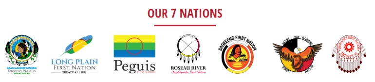

Treaty One:
We acknowledge being on Treaty One territory and commit to moving forward in partnership with Indigenous communities towards reconciliation. We recognize that we are gathered on Treaty 1 Territory and that Manitoba is located on the Treaty Territories and ancestral lands of the Anishinaabeg, Anishininewuk, Dakota Oyate, Denesuline, and Nehethowuk Nations.
.jpg)
Treaty 1 was signed 3 August 1871 between Canada and the Anishinabek and Swampy Cree of southern Manitoba.The seven First Nations that are represented by Treaty One Nation are: Peguis First Nation, Sagkeeng First Nation, Brokenhead Ojibway Nation, Roseau River Anishinaabe First Nation, Long Plain First Nation, Sandy Bay Ojibway First Nation and Swan Lake First Nation
The seven First Nations that are represented by Treaty One Nation are: Peguis First Nation, Sagkeeng First Nation, Brokenhead Ojibway Nation, Roseau River Anishinaabe First Nation, Long Plain First Nation, Sandy Bay Ojibway First Nation and Swan Lake First Nation